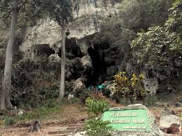

Gua Batu Hapu
Gua Batu Hapu adalah objek wisata yang terletak di dekat pasar Binuang tepatnya di desa Batu Hapu, kecamatan Hatungun, Tapin yang bisa ditempuh 43 Km dari Kota Rantau dan 154 km dari Kota Banjarmasin. Goa Batu Hapu dari pasar Binuang masuk sejauh 16 km dengan jalan yang sudah cukup baik, ditempuh dengan jalan santai sambil menikmati pemandangan kehidupan pedesaan dan nuansa alam pegunungan selama 30 menit, goa ini terletak dipegunungan sehingga yang mempunyai hobi tantangan panjat tebing disinilah nyalinya diuji, tetapi risiko ditanggung sendiri karena belum diasuransikan, masyarakat di sekitar goa siap bermitra dengan wisatawan yang berkeinginan bermalam sambil menikmati makanan dan kehidupan masyarakat pedesaan. Gua Batu Hapu merupakan goa yang mempunyai panorama luar biasa yang mempunyai stalagnit dan stalagmit menghiasi dalam goa yang dapat menggugah kebesaran Tuhan Yang Maha Esa dalam ciptaan-Nya sebagai pelajaran pengetahuan alam, goa ini telah mendapatkan sentuhan perbaikan dan penataan, Pemerintah Daerah sehubungan kerusakan yang diakibatkan keserakahan oknum manusia yang hanya mengejar keuntungan ekonomi sesaat tanpa mensyukuri nikmat lainnya yang disediakan oleh alam. Menurut legenda yang sampai sekarang menjadi mitos masyarakat setempat tentang asal usul terjadinya Goa Batu Hapu ini adalah Raden Penganten yang dikutuk oleh ibunya, Diang Ingsun menjadi batu dan di antara pecahan kapalnya menjadi gunung dan goa yang ada sekarang ini.